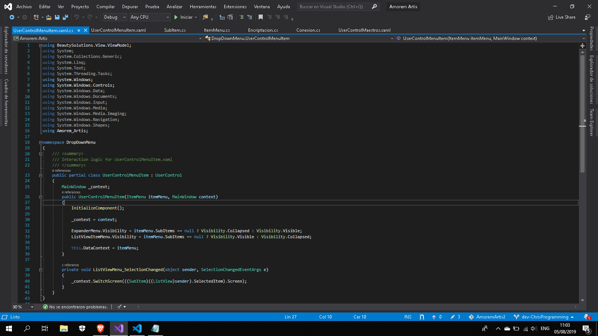
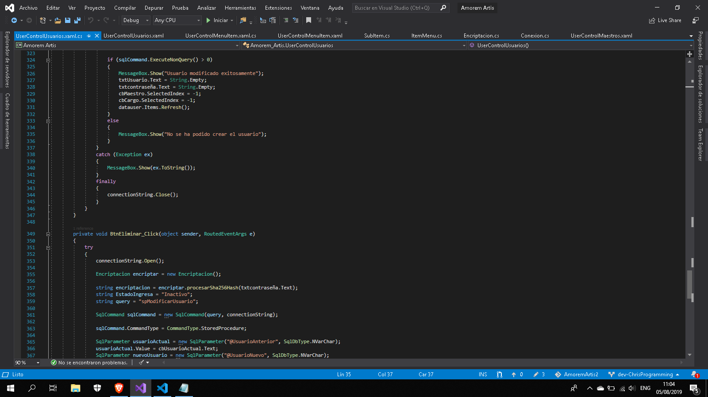

Manual Tecnico
1. Conexion
Claser conexion que es el puente entre el programa y la base de datos.
2. Encriptacion
La encriptacion permite que toda contraseña o informacion clasificada no sea interceptada facilmente.
3. Item Menu
Clase que permite mostrar un item del menu en el menu principal
4.Sub Item Menu
Clase que permite mostrar un sub item dentro de los items desplegables del menu principal
5. User menu item
Esto permite que los sub items dentro de un item se desplieguen y contraigan a necesidad
5.1. User menu intem programacion
Fucnoiamiento del user manu item.
6. Usuario
Este es el funcionamiento general de una pantalla de usuario comprendiendo el funcionamiento de este se puede saber como se funciona todo el sistema.


Copyright © 2019 Amorem Artis